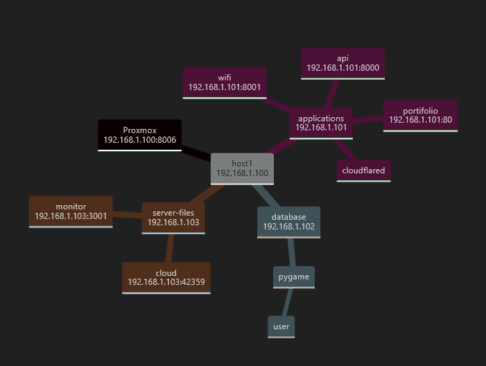

Olá, meu nome é Sérgio 👋
Em desenvolvimento!
Sobre Mim
Meu nome é Sérgio Murilo dos Santos, sou um profissional de Tecnologia da Informação com experiência em desenvolvimento, infraestrutura e suporte técnico. Minha atuação abrange desde a criação de sistemas eficientes até a otimização de processos, garantindo estabilidade e inovação em diferentes áreas da TI.
Tenho conhecimentos em backend Python, banco de dados Oracle e MySQL, manutenção de máquinas, redes e automação. Estou sempre explorando novas tecnologias para aprimorar minhas habilidades e desenvolver soluções que tornem os processos mais eficientes e ágeis.
Além do desenvolvimento tradicional, sou entusiasta da criação de jogos, estudando Python com a biblioteca Pygame para construir experiências interativas do zero.
Minha atuação é guiada por aprendizado contínuo, prover soluções e inovação. Seja desenvolvendo sistemas, otimizando infraestrutura ou criando jogos, estou sempre pronto para enfrentar novos desafios e expandir meus conhecimentos.
Home Server
Visão Geral da Infraestrutura
Servidor doméstico configurado com as seguintes tecnologias:
Servidor Web
Nginx configurado como servidor web principal, gerenciando requisições e proxy reverso
Segurança
Cloudflare implementado para proxy reverso e proteção contra ataques DDoS
Conteinerização
CasaOs para gerenciamento de containers, servidor SMB e armazenamento em nuvem
Banco de Dados
MySQL configurado para armazenamento e gerenciamento de dados das aplicações
Aplicações Hospedadas
Portfólio
Site pessoal desenvolvido com HTML, CSS e JavaScript
API
Backend em Python com autenticação e gerenciamento de usuários e Webhook do discord para monitoramento do host
WiFi Manager
Sistema de gerenciamento de rede local
Monitoramento
Monitoramento utilizando Uptime Kuma utilizando alerta com um endpoint da API
Cloud
Cloud implementado com container NextCloud
Servidor SMB
Cloud implementado com container NextCloud
Banco de dados
Banco de dados MySQL
Arquitetura
Diagrama da infraestrutura:
Stack Tecnológica
Frontend
- HTML5
- CSS3
- JavaScript
Backend
- Python
- MySQL
- Nginx
DevOps
- Docker
- Cloudflare
- Git
Exemplos de Implementação
Exemplo de configuração de proxy reverso:
server {
listen 80;
server_name example.com;
location / {
proxy_pass http://localhost:3000;
proxy_set_header Host $host;
proxy_set_header X-Real-IP $remote_addr;
}
}
Exemplo de estrutura de banco de dados:
CREATE TABLE users (
id INT NOT NULL AUTO_INCREMENT,
username VARCHAR(255) NOT NULL,
email VARCHAR(255) NOT NULL,
created_at TIMESTAMP DEFAULT CURRENT_TIMESTAMP,
PRIMARY KEY (id)
);